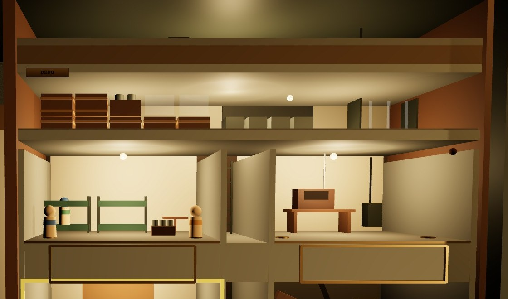
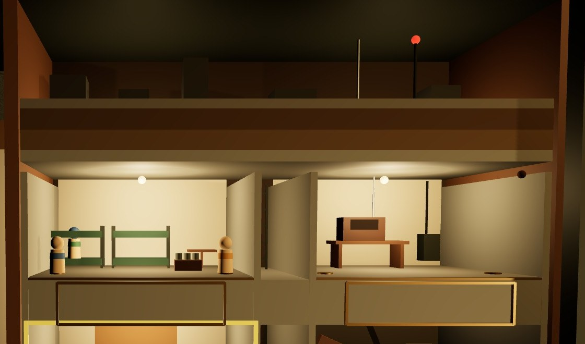

A · DEPOÖNERİLEN

+Asıl soru makette sayılır: sandık = 3 erzak, kova = 5 malzeme, raf = 3 plaka; tebeşir tahtasında “ERZAK · 15 VARDİYA”.
+Atölyenin döktüğü plaka rafa geçer: oda ile depo arasındaki bağ görünür.
−Banda on dört küçük nesne; K1'den ayrıntı kaybolur, yalnız tebeşir yazısı okunur.
B · YÜZEY ŞERİDİ

+Hikâye: sığınağın üstünde yıkık yüzey ve YZ direği; tehdit hep görünür.
+Az nesne, ucuz; K1'de de okunur bir siluet.
−Bilgi taşımaz; özet panosundaki soruya cevap vermez, karar verdirmez.